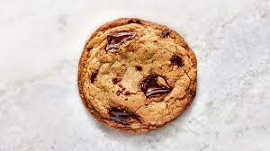

Chocolate Chip Cookies

Description
A perfect cookie filled with yummy chocolate chips and chunks.
Ingredients
- 200g All Purpose Flour
- 4g Diamond Crystal salt
- 4g Baking Soda
- 169g Unsalted Butter, divided
- 200g Packed Dark Brown Sugar
- 50g Granulated Sugar
- 1 Large Egg
- 2 Large Egg Yolks
- 2 tsp. Vanilla Extract
- 170g Bittersweet Chocolate, coursely chopped or semi-sweet chips
Steps
- Place racks in upper and lower thirds of oven; preheat to 375°. Whisk flour, salt, and baking soda in a small bowl; set aside.
- Cook ½ cup (1 stick; 113 g) butter in a large saucepan over medium heat, swirling often and scraping bottom of pan with a heatproof rubber spatula, until butter foams, then browns, about 4 minutes. Transfer butter to a large heatproof bowl and let cool 1 minute. Cut remaining ¼ cup (½ stick; 56 g) butter into small pieces and add to brown butter (it should start to melt but not foam and sizzle, so test with one piece before adding the rest).
- Once butter is melted, add both sugars and whisk, breaking up any clumps, until sugar is incorporated and no lumps remain. Add egg and egg yolks and whisk until sugar dissolves and mixture is smooth, about 30 seconds. Whisk in vanilla. Using rubber spatula, fold reserved dry ingredients into butter mixture just until no dry spots remain, then fold in chocolate (the dough will be soft but should hold its shape once scooped; if it slumps or oozes after being scooped, stir dough back together several times and let rest 5–10 minutes until scoops hold their shape as the flour hydrates).
- Using a 1½-oz. scoop (3 Tbsp.), portion out 16 balls of dough and divide between 2 parchment-lined rimmed baking sheets. Bake cookies, rotating sheets if cookies are browning very unevenly (otherwise, just leave them alone), until deep golden brown and firm around the edges, 8–10 minutes. Let cool on baking sheets.
- eat.
Return to Main Page